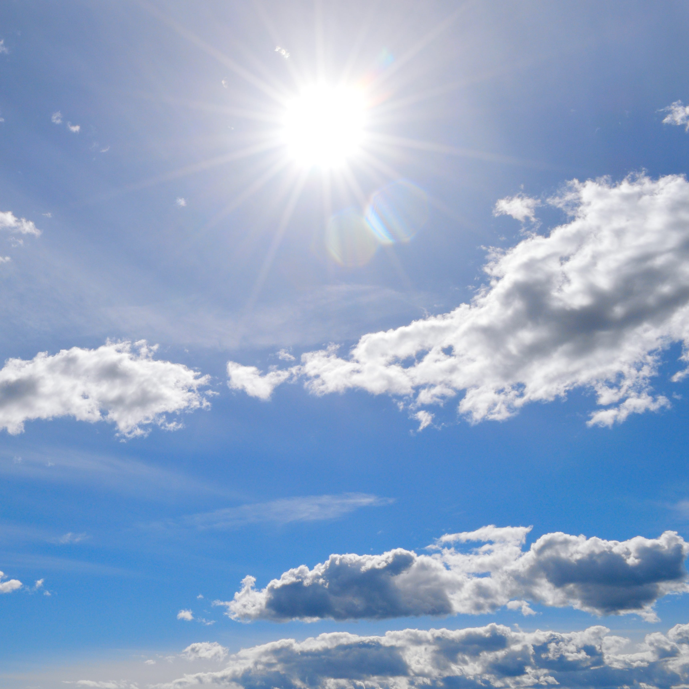
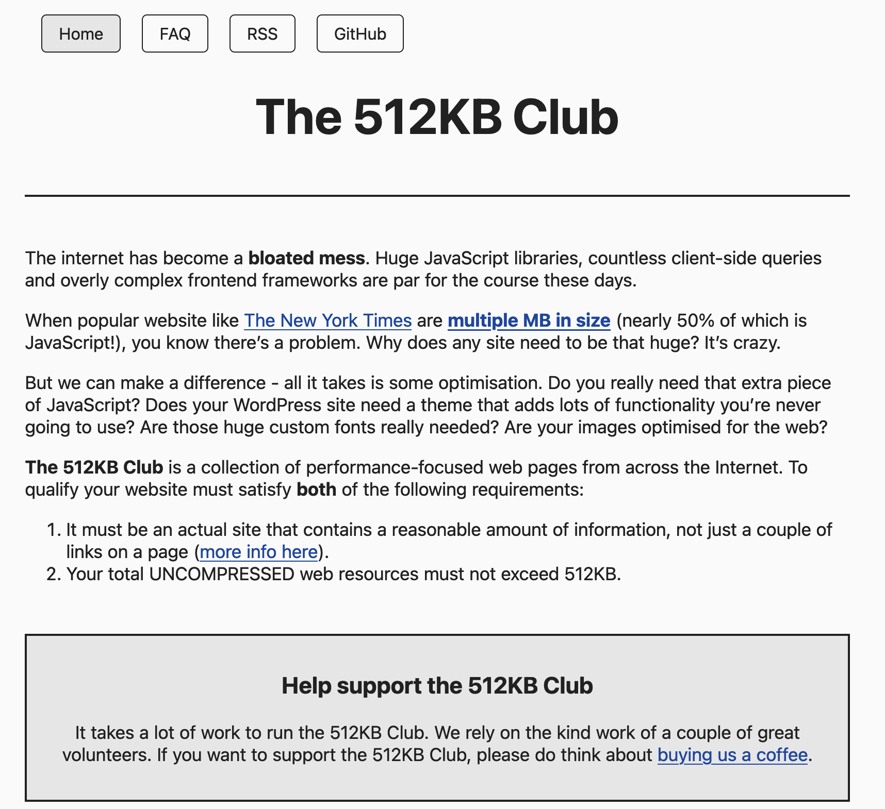
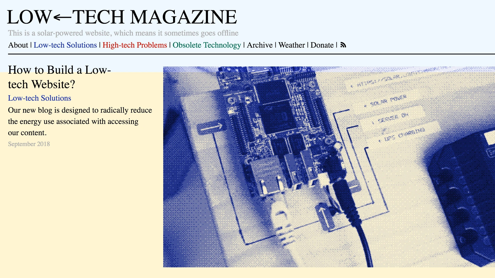
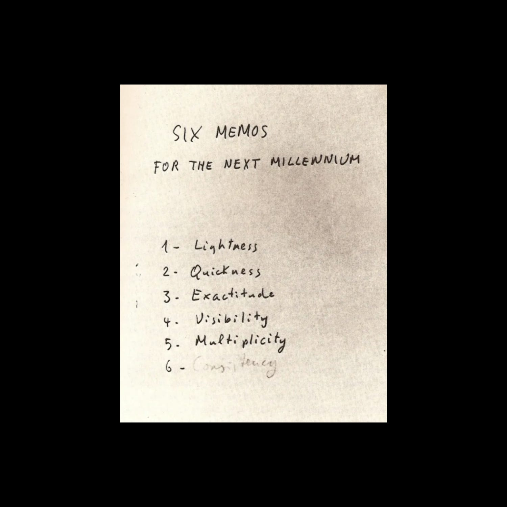
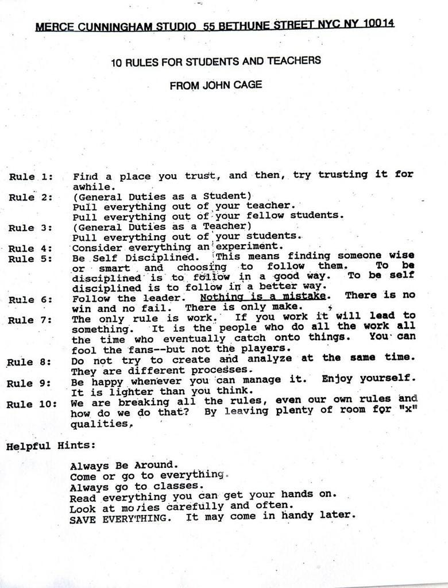
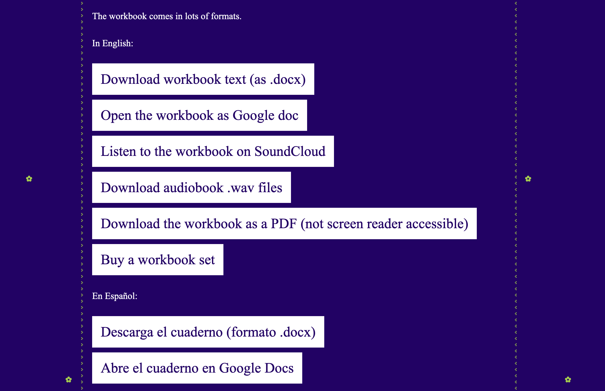
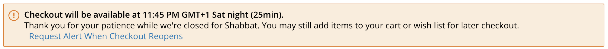

The word “ultralight” simply means “extremely lightweight” —
In the physical realm, examples include planes and kites. Some kites are so lightweight they can fly indoors, for instance. While some planes are so lightweight they’ve earned the title “microlight.” Or there’s the subreddit called r/Ultralight, dedicated to lightweight backpacking equipment to ideally make your journey less burdensome …
Patrick Tan creates ultralight kites you can fly indoors, like the iFlite
But what does “ultralight” mean for technology and the internet?
At first, ideas around lightness or heaviness might not intuitively make sense because ethereal technology metaphors like “the cloud” often hide or downplay physical infrastructure.
But in reality, the internet is a physical thing, connected by underwater submarine cables and served from data centers containing many literal computers worldwide. Our phones are made from rocks. All computing is physical computing.
“There is no cloud, it’s just someone else’s computer. And that someone else is likely Amazon, Google, Facebook or Apple, whose data centers use real resources and take up acres of space around the globe.”
But how can we feel the physicality of the internet if it’s so intentionally obscured?

After one year of running nearly all their phone and computer charge off a solar panel, artist Austin Wade Smith reported back:
“I’m convinced you can feel the environment in your phone if you use the limited availability of sunlight charge as a tangible constraint in internet consumption.”
“The web needs to rise and set.”
“Buttons revealed on the eclipse.”
“Tickets available at high tide.”
“Posts only possible when it’s raining.”
“Turns out the world always already was an internet, and websites are just kites …”
Websites, which make up some of the internet, can also be lightweight.
From a pragmatic standpoint, light websites have a usefulness — they are quick to load, often accessible by default, and use less energy and resources which can have an impact on the environment. (If you search for “lightweight websites,” you may come across collections of websites that are small or even smaller in file size, with few dependencies.)

Some websites, like Low Tech Magazine’s solar-powered one, take this a step further, directly linking their lightweight website to limited (but still relatively abundant) physical resources, like the sunshine in Barcelona.

Low Tech Magazine's Solar Powered Website by Kris de Decker, Marie Otsuka, Roel Roscam Abbing (2018 –)
Websites can be lightweight in metaphorical ways, too. Perhaps it’s about seeing the world in a new way.
“Whenever humanity seems condemned to heaviness, I think I should fly like Perseus into a different space. I don’t mean escaping into dreams or into the irrational. I mean that I have to change my approach, look at the world from a different perspective, with a different logic and with fresh methods of cognition and verification. The images of lightness that I seek should not fade away like dreams dissolved by the realities of present and future...”
— Italo Calvino, Lightness, Six Memos for the Next Millennium (1988)

(This is not to say that heaviness does not also have its merits. It’s only to say that in the realm of ever-expanding technology, certain intentional limits enable life, sustainability, and accessibility.)
One of our favorite aspects of “ultralight” is how it can encourage ultralight processes, too. What if a methodology, which might be inherently lightweight, is actually the focus instead?

Ultralight is ...
“a minimum possible means to achieve an ambitious, even quixotic goal”
“To start from nothing and make almost nothing. The dream of a perfect content management system, a blank slate, a design process that barely creates or destroys but merely deploys the engine of a discourse, with a little waste heat. Still, it should look like something, glimmer in the light.”
Artist Weiyi Li frames her entire practice as one of distillation. From her thesis book Four Hundred Forty Five Pieces of Lightness (2012):
“My work is about removing weight, like a cutter or a distiller. My job is thinning and squeezing things, making them thinner than onion skin and lighter than a feather. Sometimes I suspect that my work is still not light enough. A pixel on screen or a point on paper might still not be light enough. If I can make it lighter, I make it faster, until it becomes suspended ghost images. If I can not make it faster, I simply try to not make it happen, let it be an unspoken sentence staying on somebody's tongue, a gesture remaining motionless like a statue, an action waiting for consequences that will never happen. I keep thinking of a story I heard when I was a child: It was said that in Zhangzhou, China, a monk used a paint brush to draw plum flowers in the air every day. During his life, he never drew anything on paper at all. I always dream about doing something as light as the invisible plum flower he drew.”
“The finer I slice the strawberries, the more surfaces there are; the more surfaces there are, the more it tastes.”
— Christopher Alexander, A Timeless Way of Building (1979)
This idea of "increasing surface area" was key to my website design work for Artists Space, where I implemented five different modes of entering the archive (pages, images, text, artists, videos)... which was inspired by Artist Space's physical building having two separate entrances — an imporant form of accessibility.
When I worked with Finnegan Shannon on the website for Alt Text as Poetry, they said that one important form of accessibility is simply to have something available in many different formats. Some people are podcast people, other people like to read it in a book, for example.

Book's Many Formats on the Alt Text as Poetry Website
Many of my favorite projects start with what I call a "generous format." One example is Perfume Area, a collaborative fragrance review project that started as a website (well, a Tumblr at first, to be specific) —
After being a website, Perfume Area easily translated into many projects (including readings and later a book). It's nice to consider projects that have this fluidity, starting from a strong concept.
Reasons for changing functionality depending on time can be artistic, sustainability-focused, and/or religious —

The largest non-chain photography store in the US, B&H Photo Video, effectively closes their website during Shabbat because you cannot make any purchases during that time.
Something interesting about time ... is that it's always related to place. Marie says when you're programming time on a website, you either need to set it to a specific location or make it the user's time ... What is the season on the server, anyway? In Marie's workshop, we'll learn how to make websites that are time specific.
Benjamin Earl "coding in situ"
The tiny servers we'll be using in Ben's Ultralight Computer workshop can only host 1MB maximum. We'll need to make websites that are under that limit.

 “Turns out the world always already was an internet, and websites are just kites …”
“Turns out the world always already was an internet, and websites are just kites …”